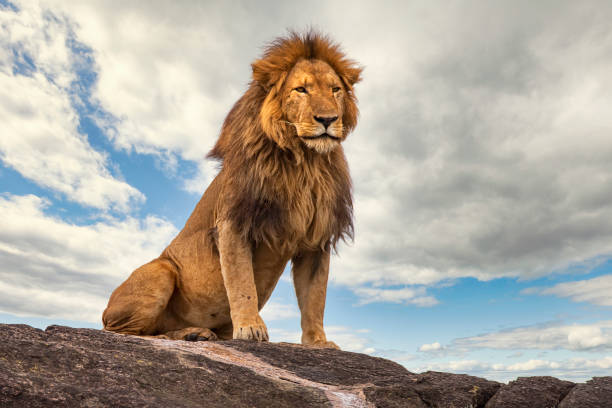
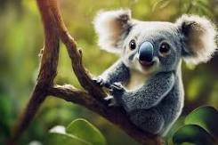
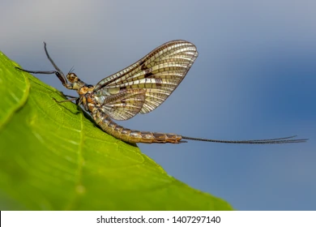
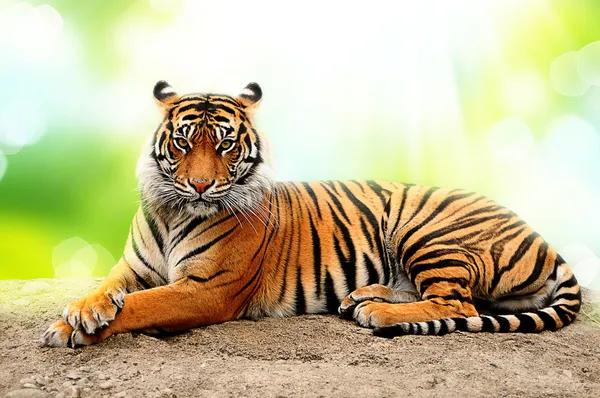

My Best Top 5 Animals
I don't really have any pet though
I want to really list out some things over here;
- Cat Family;
A drawing of a Cat
- Tasmanian Devil;

- Lions

- kaola;
- They are small in size.
- They likely sleep all day long.
- They are friend animals;
- They are friendly because they look calm and they have soft hairs.
- They mostly spend their lives on trees.

I would love to discuss about some other animals here:
- Pufferfish;

- It is a very beautiful image and the organism itself also has stingers on its body.
- It is also not very big in size although it might look fat.
- Mayfly;

- It belongs to the order 'Ephemeroptera'.
- It can live for about 6months to 1year in the larvae stage
- Once it beomes an adult, it does not live up to 24hours before it dies.
- its primary aim is to reproduce onces it emerges as an adult.
- it is a tailed-insect i.e It has quite a long tail.
- Tripod Fish;
- I don't really have much to say this particular fish cause it looks unimaginary at
first sight and it looks like it has three-legs.
- It also looks shiny, it may have some interesting properties which makes it unique
and special;
- Maybe presence of oil in the body.
- Uropygial Gland;
- Squalene and Wax esters e.t.c.
- The fish looks like it would be so sweet to consume.

- Tiger

- Lion
My God is good.
I love animals
I LIKE BEING PAMPERED
A brief history of time by Stephen Hawking has sold over 10 million copies worldwide.
- Sashimi
- Sliced raw fish that is sliced with condiments such as shredded daikon raddish or ginger roots.
- Redemancy
- It is the act of loving one and the person also reciprocrates the love back.
The Setae is an hydrophobic hair that prevents water encroachment.